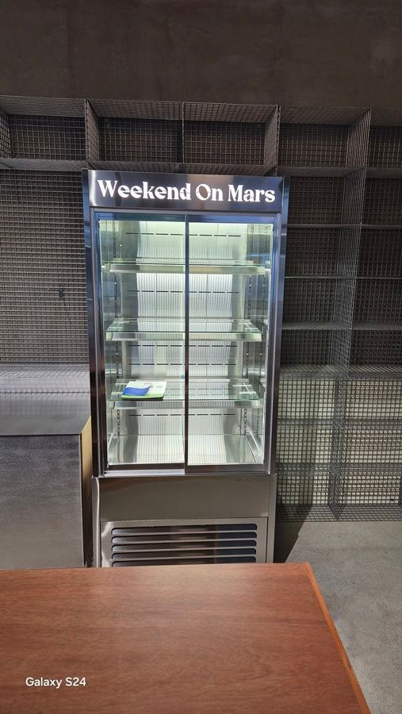
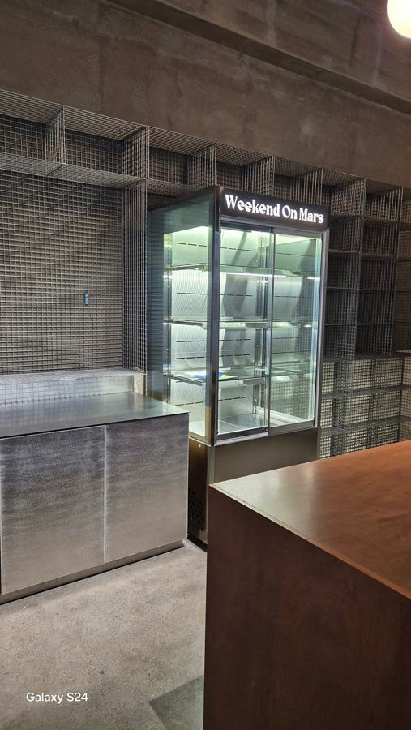
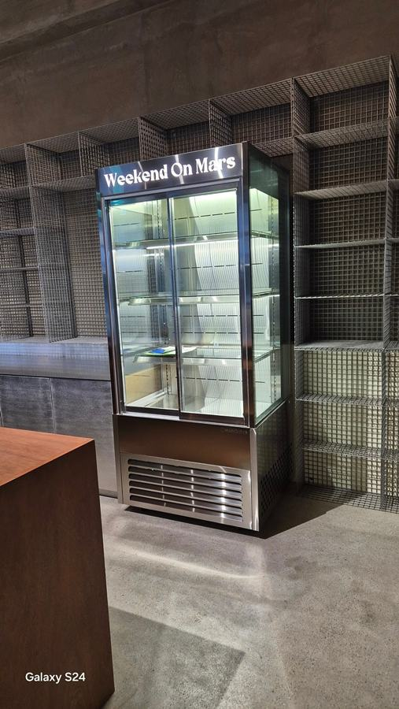
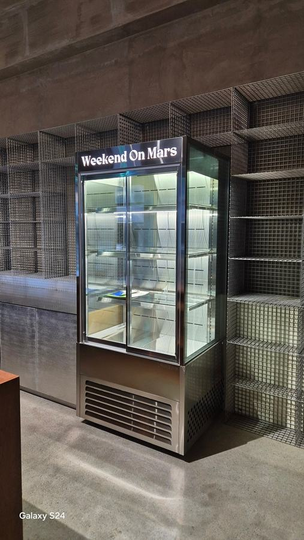
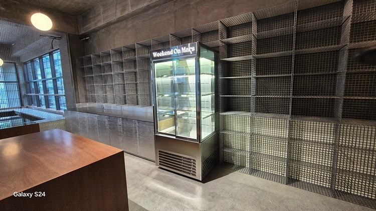
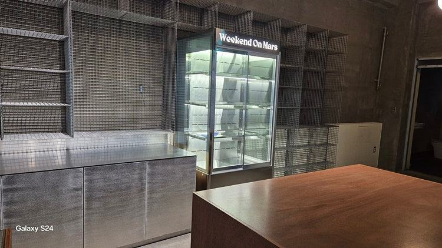
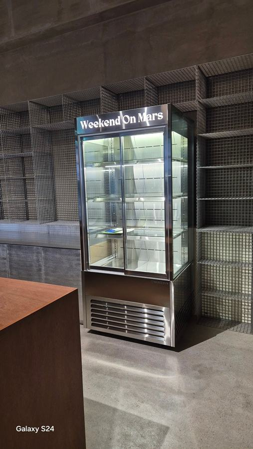
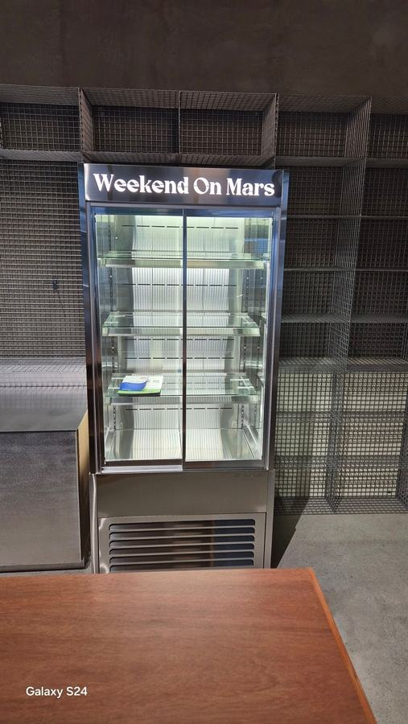

반찬(진열)쇼케이스
반찬쇼케이스 고르는법, 냉기 흐름·문 방식·조명 세 가지 기준

반찬쇼케이스는 냉풍이 반찬에 직접 닿지 않고 위아래 온도 차가 적은 냉기 흐름, 손님이 꺼내는지 직원이 담아 주는지에 맞는 문 방식, 반찬 색을 자연스럽게 보여 주는 조명 세 가지를 기준으로 고르시면 됩니다. 여기에 김서림 방지 유리와 청소하기 쉬운 선반 구조를 더해 보시면 오래 쓰기 편한 제품을 고를 수 있습니다.
안녕하세요. 반찬가게와 반찬 코너의 진열 쇼케이스를 매장 운영 방식에 맞춰 만드는 한성쇼케이스입니다.
반찬가게 사장님들께 쇼케이스 고민을 여쭤 보면 비슷한 말씀이 나옵니다. "아침에 담아 놓은 나물이 점심만 지나면 윤기가 없어요." "유리에 김이 서려서 손님이 반찬을 못 봐요." 같은 반찬을 만들어도 쇼케이스에 따라 오후 상태가 달라진다는 걸 겪어 보신 거죠.
반찬쇼케이스는 겉보기엔 다 비슷한 진열장 같지만, 안에서 냉기가 어떻게 도는지, 문이 어떻게 열리는지, 조명이 어떤 색인지에 따라 반찬의 신선도와 손님 반응이 달라집니다.
오늘은 반찬쇼케이스를 고를 때 꼭 봐야 할 기준을 냉기 흐름, 문 방식, 조명 세 가지로 나눠 정리해 드리겠습니다.
1. 냉기 흐름, 반찬 표면이 마르지 않게
반찬은 찬바람이 직접 닿으면 표면부터 마릅니다. 나물은 숨이 죽고 조림은 겉이 굳어 윤기가 사라지죠.
냉풍이 한곳에 몰리지 않고 고르게 퍼지는 구조인지, 위 칸과 아래 칸 온도 차가 크지 않은지 확인해 보세요.
조명 열이 내부 습도와 온도에 영향을 주지 않는지도 봐야 합니다. 모터가 내부에 들어가는 내치형 구조는 진동과 열 전달이 적어 반찬 매장에 많이 권해 드립니다.
매장에서 직접 손을 넣어 선반 앞쪽에 바람이 세게 느껴지는 곳이 없는지 확인하시면 가장 정확합니다.
- 냉풍이 한곳에 몰리지 않는지 보세요.
- 위아래 칸 온도 차를 확인하세요.
- 모터 방식과 조명 발열을 확인하세요.
2. 문 방식, 매장 운영에 맞추기
손님이 직접 용기를 꺼내 가는 셀프형이라면 앞문 방식이 맞습니다. 보충 작업도 앞에서 할 수 있어 동선 관리가 쉽습니다.
직원이 저울에 달아 담아 주는 대면형이라면 뒷문 방식이 손님 동선을 방해하지 않고 위생 관리에도 유리합니다.
통로가 좁은 매장이라면 문이 앞뒤 공간을 덜 차지하는 슬라이딩 방식을 고려해 보세요. 문이 자주 열리는 반찬가게 특성상 문 패킹과 닫힘 구조가 튼튼한지도 꼭 확인하셔야 합니다.


3. 조명과 유리, 반찬이 잘 보이게
반찬은 색이 곧 맛의 첫인상입니다. 백색 LED는 음식 색감을 자연스럽게 보여 주고, 주광색, 주백색, 전구색 중 매장 분위기와 반찬 구성에 맞춰 고를 수 있습니다.
김치와 무침이 많다면 붉은 색이 살아나는지, 나물이 많다면 초록이 탁해 보이지 않는지 실제 반찬을 놓고 비교해 보세요.
국물 반찬이 많아 내부 습기가 높으니 김서림 방지 기능이 있는 페어 유리인지도 확인하세요. 유리가 흐려지면 아무리 좋은 반찬도 손님 눈에 들어오지 않습니다.
4. 선반 구조와 외관
유리 선반 3단처럼 시야가 트인 구조는 여러 가지 반찬을 한눈에 보여 주기 좋습니다. 선반 높이를 용기 크기에 맞춰 바꿀 수 있는지, 선반을 빼서 닦기 쉬운지도 함께 보세요.
외관은 스텐이 위생적이고 내구성이 좋은 편이라 반찬 매장에서 많이 씁니다. 예를 들어 1800 × 750 × 1900 크기에 유리 선반 3단, 백색 LED, 스텐 외관, 앞문, 내치형 모터 조합처럼 매장 조건에 맞춰 구성을 정하게 됩니다.
- 선반 높이 조절과 탈부착 여부를 확인하세요.
- 외관 소재는 청소와 위생을 기준으로 고르세요.
체크리스트
- 냉풍 분산과 위아래 온도 차
- 모터 방식과 조명 발열
- 셀프형·대면형에 맞는 문 방식
- 반찬 색에 맞는 조명
- 김서림 방지 페어 유리
- 선반 조절·탈부착과 외관 소재
온도 편차와 결로로 교체한 레스토랑 쇼케이스 사례
반찬쇼케이스는 아니지만, 고르는 기준이 같아 소개해 드리는 현장입니다. 부산 해운대의 한 레스토랑 대표님은 기존 설비의 온도 편차와 결로 문제로 오래 고민하시다 찾아오셨습니다.
상담을 거쳐 인테리어 콘셉트에 맞는 디자인과 규격, 기능으로 주류 쇼케이스를 제작했습니다.
교체 후 냉기 유지가 안정되고 진열 가시성이 좋아졌다는 말씀을 들었고, 홀 매니저님은 청소와 유지 관리가 편해 마감 시간이 줄었다고 하셨습니다.
반찬쇼케이스도 온도 균일성, 결로 방지 구조, 조명 품질, 관리 편의성을 같은 기준으로 보시면 됩니다.










자주 묻는 질문
반찬쇼케이스는 오픈형과 도어형 중 무엇이 좋나요?
손님이 직접 고르는 회전 빠른 매장은 오픈형, 반찬을 오래 진열하거나 국물 반찬이 많은 매장은 도어형이 관리가 쉽습니다.
매장 운영 방식과 진열 시간을 기준으로 정해 보세요.
기존 쇼케이스에서 반찬이 마르는데 바꿔야 할까요?
먼저 토출구 앞 반찬 위치와 설정 온도를 조정해 보세요. 그래도 표면이 계속 마른다면 냉기 흐름 구조의 문제일 수 있어 교체를 검토해 볼 만합니다.
직접 보고 고를 수 있나요?
공장에서 샘플을 보며 상담하실 수 있습니다. 국내 최초로 쇼케이스 전문 디자이너가 상주하고 있어 매장 도면을 보며 구성을 함께 정할 수 있습니다.
매장 조건에 맞춰 만드는 한성쇼케이스
원하시는 제품 사진과 설치할 공간 사진만 보내 주셔도 매장에 맞는 구성을 추천해 드립니다.
- 전국 240여 개 A/S 전담 센터 운영
- 본사 대량 자재 매입으로 품질 대비 합리적인 가격
- 유럽제·삼성 냉각 콤프레셔 적용
- 국내 최초 쇼케이스 전문 디자이너 상주
매장 폭과 원하는 진열 구성을 알려 주세요. 실측과 견적을 안내해 드립니다.
031-986-2458